Industrial Automation · PLC · HMI
Industrial Automation & PLC-Based Control Systems
Integrated PLC-based control for concrete batching and industrial processes, with field I/O, HMI operation, SCADA monitoring and industrial communications.
Implemented Project
System architecture
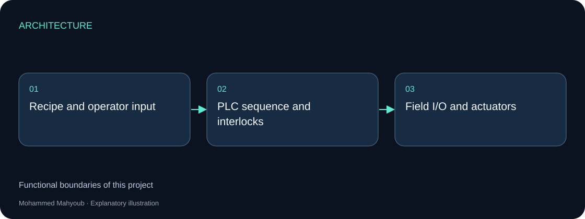
Implementation scope
The field layer measures level, pressure, flow and weight. PLC logic coordinates motors, valves and pumps, while HMI panels provide operator commands and SCADA provides alarms, trends and historical records.
Engineering approach
Weighing and batching depend on the relationship between dosing, settled weight, mixing and discharge. The repository explains coarse/fine feed, interlocks and alarm handling; its example addresses and tags illustrate engineering patterns rather than an as-built I/O schedule.
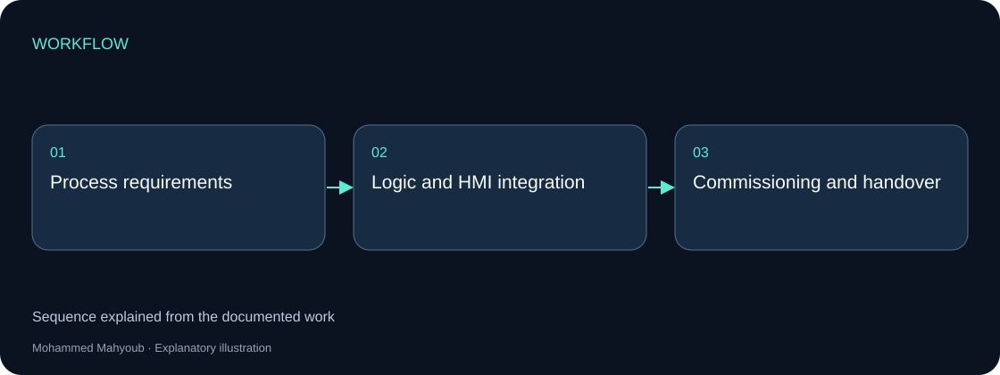
Visual documentation
Original project posters and interface screenshots are identified separately from explanatory source diagrams. The gallery documents this project only. Open any figure to inspect it at full available resolution.

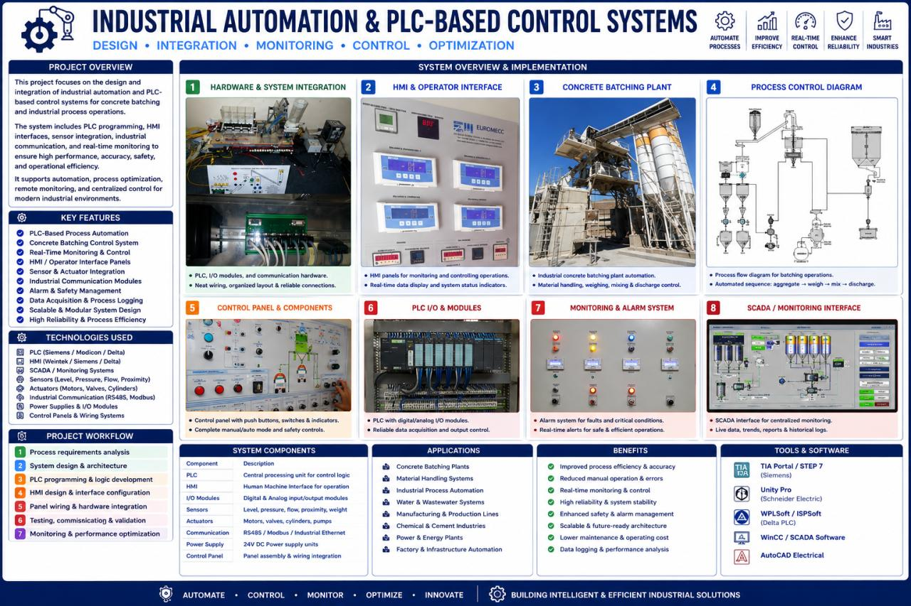

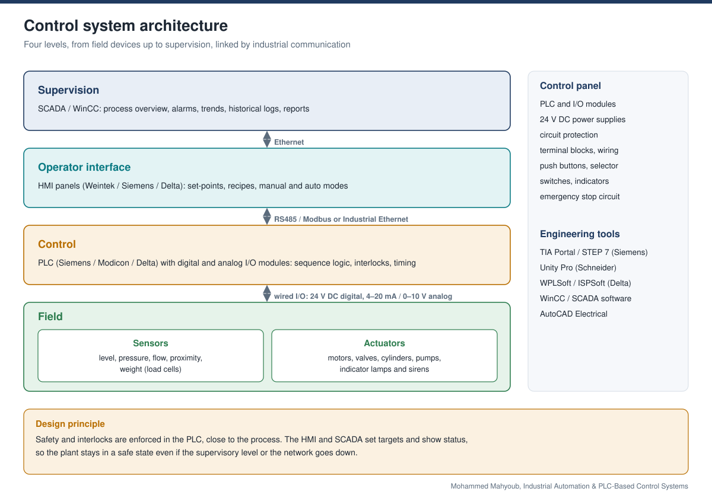

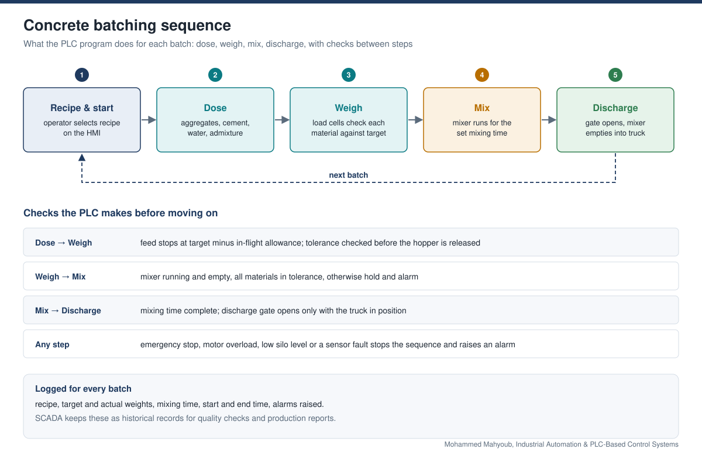

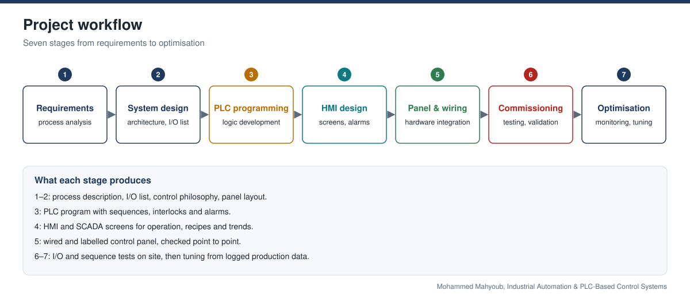

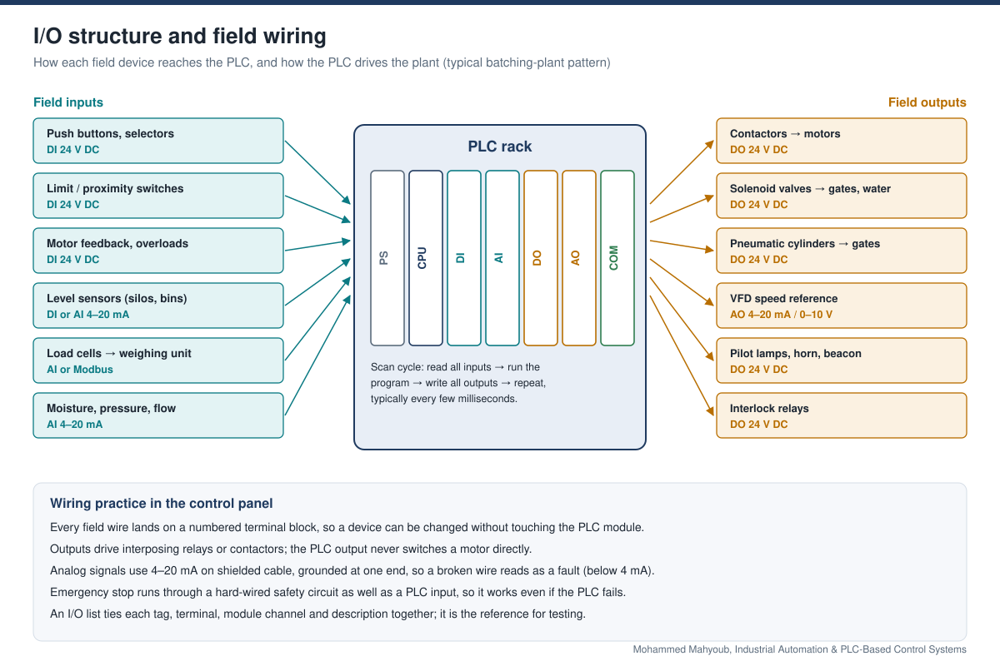

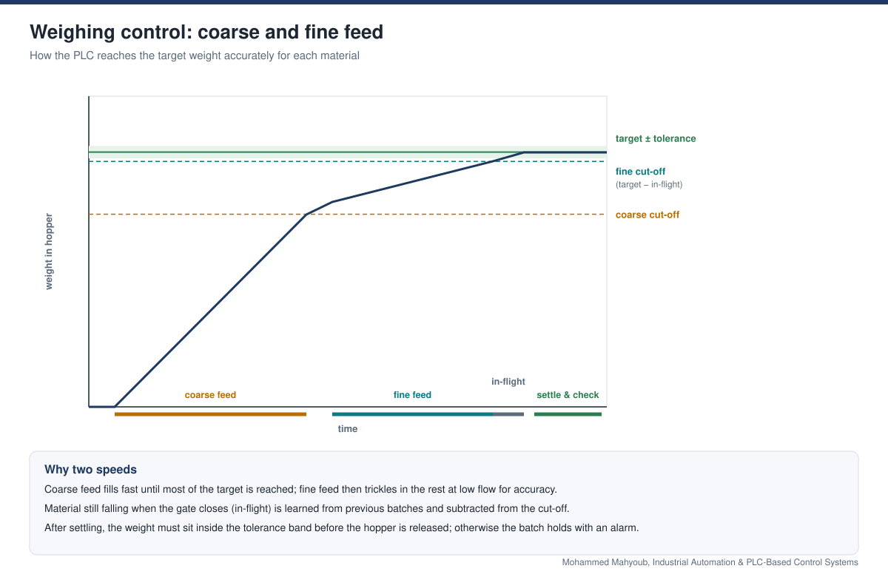

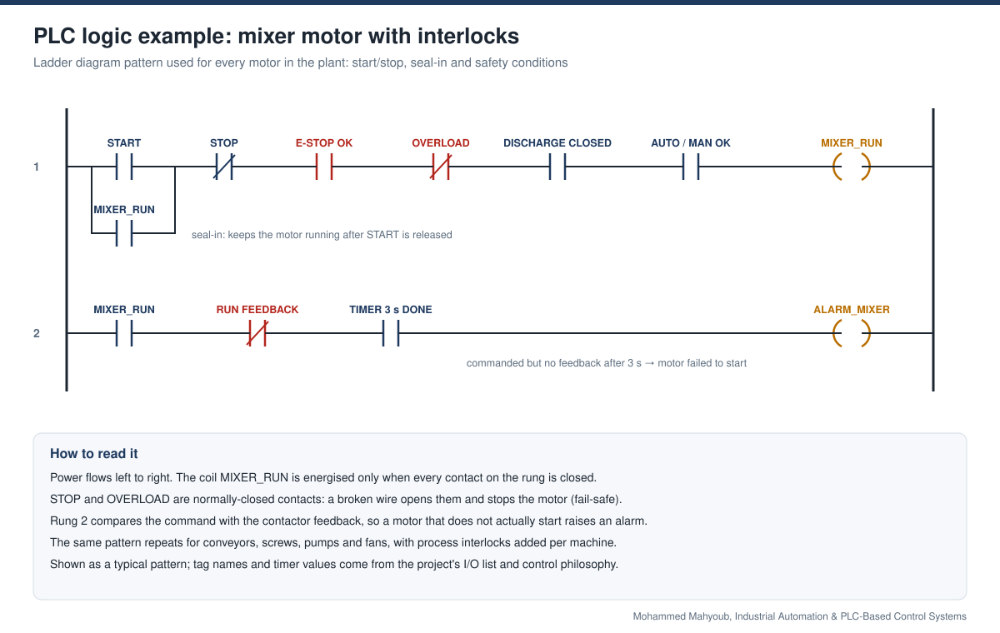

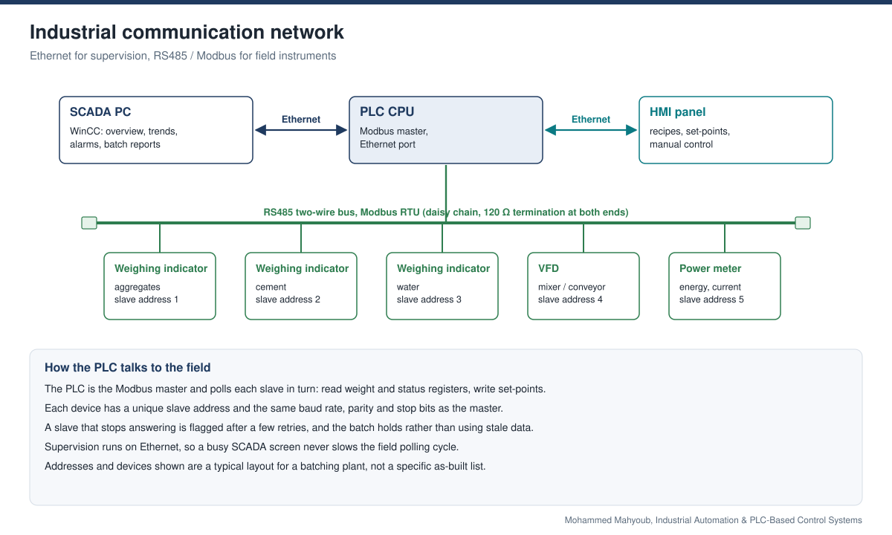

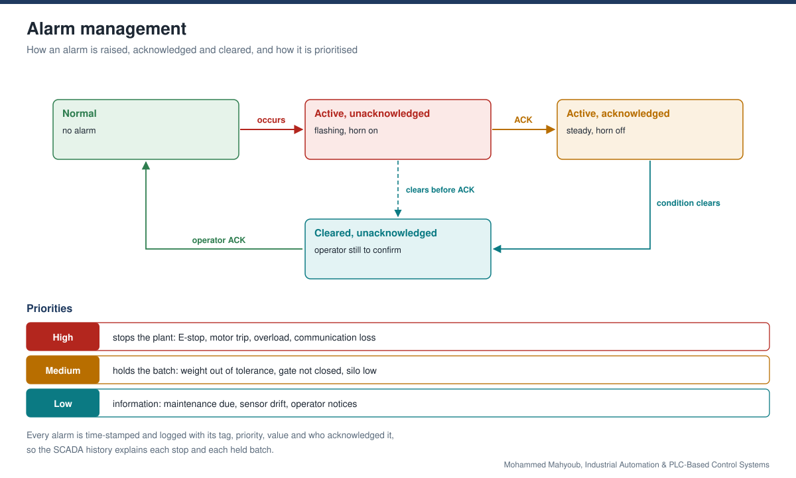

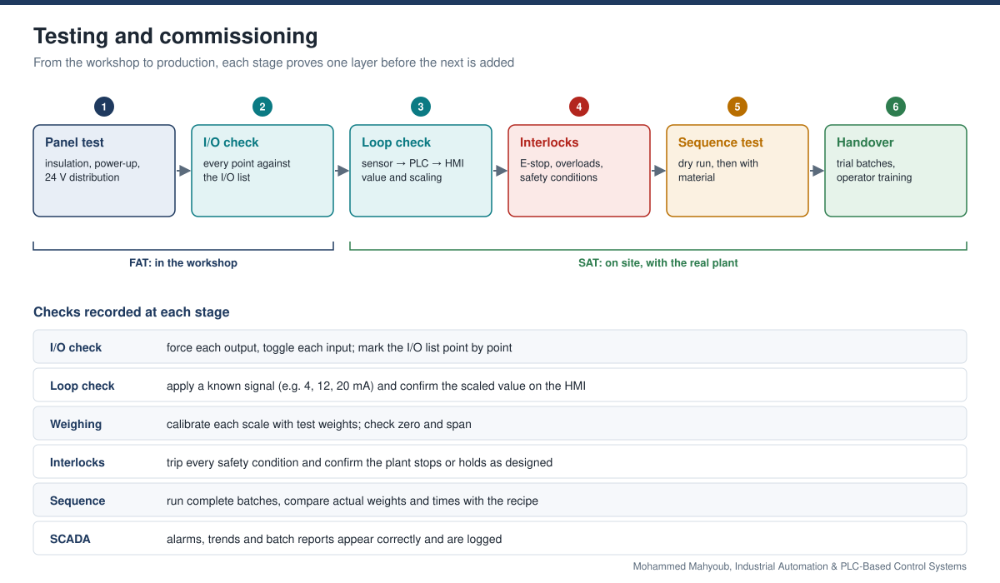

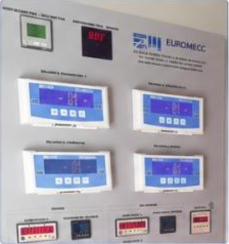

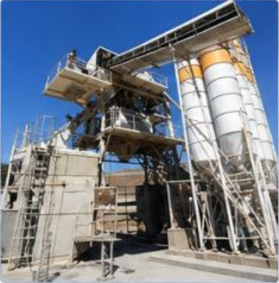

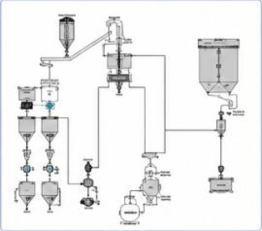

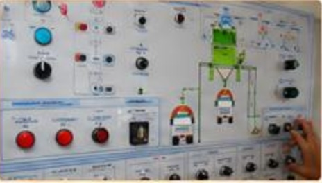

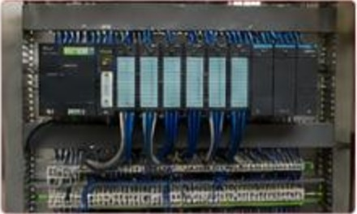

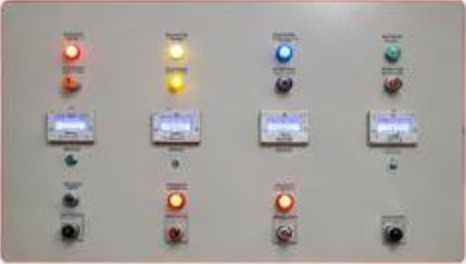

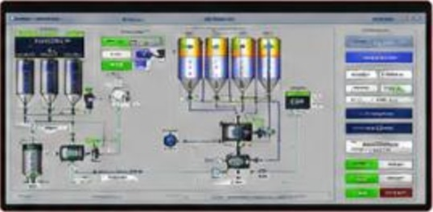